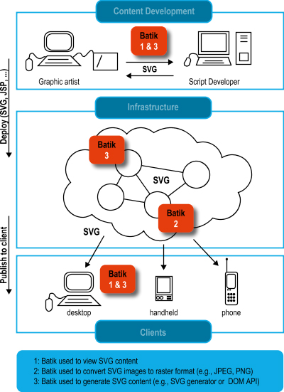

{kind=link}
Batik SVG Toolkit
Overview
Batik is a Java-based toolkit for applications or applets that want to use images in the Scalable Vector Graphics (SVG) format for various purposes, such as display, generation or manipulation.
The project’s ambition is to give developers a set of core modules that can be used together or individually to support specific SVG solutions. Examples of modules are the SVG Parser, the SVG Generator and the SVG DOM. Another ambition for the Batik project is to make it highly extensible—for example, Batik allows the developer to handle custom SVG elements. Even though the goal of the project is to provide a set of core modules, one of the deliverables is a full fledged SVG browser implementation which validates the various modules and their inter-operability.
What Batik can be used for
 With Batik, you can manipulate SVG documents anywhere Java is available. You can also use the various Batik modules to generate, manipulate and transcode SVG images in your applications or applets.
Batik makes it easy for Java based applications or applets to deal with SVG content. For example, using Batik’s SVG generator module, a Java application or applet can very easily export its graphics into the SVG format. Using Batik’s SVG viewing component, an application or applet can very easily integrate SVG viewing and interaction capabilities. Another possibility is to use Batik’s modules to convert SVG to various formats, such as raster images (JPEG, PNG or TIFF) or other vector formats (EPS or PDF, the latter two due to the transcoders provided by Apache FOP).
The Batik toolkit includes the following:
Modules
- An SVG DOM implementation
- A set of SVG microsyntax parsers
- A scripting module
- A generator that creates an SVG document from Java2D calls
- A Swing SVG component
- A transcoder module
Tools and applications
- Squiggle, an SVG browser
- An SVG rasterizer
- A TTF to SVG converter
- A pretty printer for SVG source files
See examples of projects and products using Batik for real-life example of how Batik is already integrated in projects and products.
The SVG specification
Scalable Vector Graphics, SVG, is a W3C Recommendation. It defines an XML grammar for rich 2D graphics which includes features such as transparency, arbitrary geometry, filter effects (shadows, lighting effects, etc.), scripting and animation.
The SVG specification states:
This specification defines the features and syntax for Scalable Vector Graphics (SVG). SVG is a language for describing two-dimensional graphics in XML [XML10]. SVG allows for three types of graphic objects: vector graphic shapes (e.g., paths consisting of straight lines and curves), images and text. Graphical objects can be grouped, styled, transformed and composited into previously rendered objects. The feature set includes nested transformations, clipping paths, alpha masks, filter effects and template objects.
SVG documents can be interactive and dynamic. Animations can be defined and triggered either declaratively (i.e., by embedding SVG animation elements in SVG content) or via scripting.
Implementation status
The latest revision of Batik, release 1.7beta1, is a conformant static SVG implementation and supports interactivity, linking and scripting features of the SVG specification. This release supports a nearly complete implementation of declarative animation, too.
See the status page for a detailed description of the set of SVG features Batik supports.
Download Batik
You can get the Batik distribution, source and binary, from the download page.
This is a warning that a script security issue was reported in the Batik Squiggle browser. Squiggle uses the Rhino scripting engine and some features of that engine can be leveraged by malicious scripts to gain access to otherwise protected resources (like the file system). This issue was fixed in the 1.5.1 release of Batik. If you are using a version of Batik older than 1.5.1, you should upgrade.